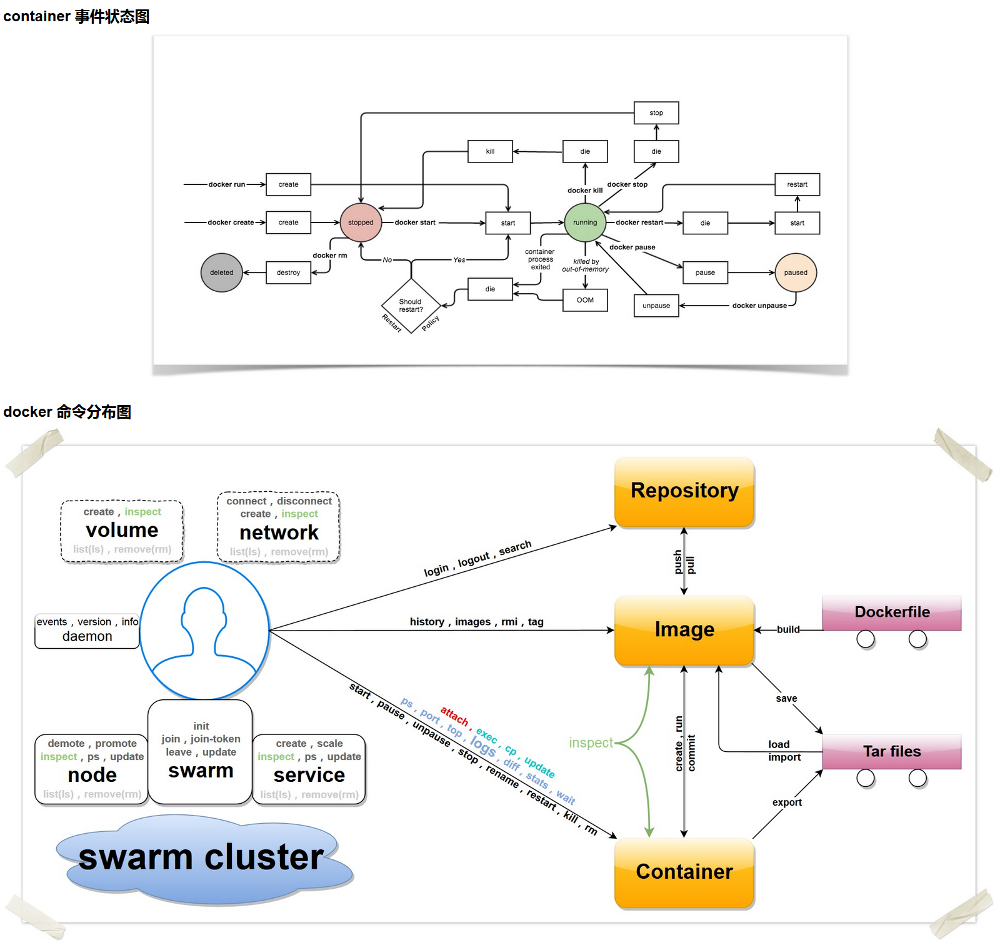

docker 客户端是与 Docker 守护进程交互的最主要方式，基本命令格式为：
docker [OPTIONS] COMMAND [ARG...]可以通过 docker COMMAND --help 来查看这些命令的具体用法。
Docker 命令总结

图中上半部分是 container 事件状态图：docker run、docker create 创建容器后处于 stopped 状态，docker start 启动后进入 running 状态；docker stop、docker kill 会让容器内主进程 die，容器回到 stopped 状态；docker pause、docker unpause 在 running 与 paused 之间切换；主进程正常退出或因 OOM 被杀也会使容器退出；docker rm 则将容器彻底销毁。
下半部分是 docker 命令分布图，展示了各条命令与仓库（Repository）、镜像（Image）、容器（Container）、Dockerfile、tar 归档、数据卷（volume）、网络（network）以及 swarm 集群等对象的对应关系。下面按操作对象分类整理常用命令。
镜像相关命令
| 命令 | 说明 |
| docker search | 从镜像仓库中搜索镜像 |
| docker pull | 从镜像仓库拉取镜像 |
| docker push | 将镜像推送到镜像仓库 |
| docker login / docker logout | 登录 / 退出镜像仓库 |
| docker images（docker image ls） | 列出本地镜像 |
| docker rmi（docker image rm） | 删除本地镜像 |
| docker build | 根据 Dockerfile 构建镜像 |
| docker history | 查看镜像的构建历史（各层变更记录） |
| docker tag | 为镜像添加标签 |
| docker save / docker load | 将镜像导出为 tar 归档 / 从 tar 归档恢复镜像 |
| docker import | 从容器文件系统的 tar 归档导入为镜像 |
| docker commit | 将容器的当前状态提交为镜像 |
| docker image inspect | 查看镜像的详细信息 |
| docker image prune | 清理悬空（dangling）镜像 |
容器相关命令
| 命令 | 说明 |
| docker run | 创建并启动一个容器 |
| docker create | 创建容器但不立即启动 |
| docker start / docker stop / docker restart | 启动 / 停止 / 重启容器 |
| docker pause / docker unpause | 暂停 / 恢复容器内的所有进程 |
| docker kill | 强制终止运行中的容器 |
| docker rm（docker container rm） | 删除容器 |
| docker ps（docker container ls） | 列出容器，加 -a 可查看已停止的容器 |
| docker exec | 在运行中的容器内执行命令 |
| docker attach | 附着到运行中容器的标准输入输出 |
| docker logs | 查看容器日志 |
| docker top | 查看容器内运行的进程 |
| docker stats | 实时查看容器资源使用统计 |
| docker cp | 在宿主机与容器之间复制文件 |
| docker port | 查看容器端口映射 |
| docker diff | 查看容器文件系统相对于镜像的变更 |
| docker rename | 重命名容器 |
| docker update | 动态更新容器的资源限制 |
| docker wait | 等待容器退出并打印退出码 |
| docker export | 将容器文件系统导出为 tar 归档 |
| docker container inspect | 查看容器的详细信息 |
| docker container prune | 批量清理所有已停止的容器 |
网络与数据卷命令
| 命令 | 说明 |
| docker network ls | 列出网络 |
| docker network create / docker network rm | 创建 / 删除网络 |
| docker network connect / docker network disconnect | 将容器接入 / 断开指定网络 |
| docker network inspect | 查看网络的详细信息 |
| docker network prune | 清理未使用的网络 |
| docker volume create | 创建数据卷 |
| docker volume ls | 列出数据卷 |
| docker volume inspect | 查看数据卷的详细信息 |
| docker volume rm / docker volume prune | 删除 / 批量清理未使用的数据卷 |
swarm 集群相关命令
docker swarm：
| 子命令 | 说明 |
| init | 初始化 swarm 集群 |
| join | 以工作节点或管理节点的身份加入集群 |
| join-token | 管理加入集群所需的令牌 |
| leave | 离开集群 |
| update | 更新集群配置 |
docker node：
| 子命令 | 说明 |
| promote / demote | 将节点提升 / 降级为管理节点 |
| inspect | 查看节点的详细信息 |
| ls | 列出集群中的节点 |
| ps | 查看节点上运行的任务 |
| rm | 从集群中移除节点 |
| update | 更新节点属性 |
docker service：
| 子命令 | 说明 |
| create | 创建服务 |
| scale | 调整服务的副本数 |
| ls / rm | 列出 / 删除服务 |
| ps | 查看服务的任务分布 |
| inspect | 查看服务的详细信息 |
| update | 更新服务配置 |
| rollback | 将服务回滚到上一配置 |
| logs | 查看服务日志 |
docker stack：
| 子命令 | 说明 |
| deploy | 根据 Compose 文件部署应用栈 |
| ls / rm | 列出 / 删除应用栈 |
| ps | 查看栈内的任务 |
| services | 列出栈内包含的服务 |
系统与信息命令
| 命令 | 说明 |
| docker info | 查看系统级信息 |
| docker version | 查看 Docker 版本信息 |
| docker events | 实时输出服务端事件 |
| docker system df | 查看镜像、容器、数据卷的磁盘占用 |
| docker system prune | 批量清理无用的镜像、容器、网络等对象 |
其他管理命令
| 命令 | 说明 |
| docker builder | 镜像构建相关管理命令 |
| docker plugin | 插件管理 |
| docker config | swarm 集群配置管理 |
| docker secret | swarm 集群敏感数据管理 |
| docker manifest | 镜像清单（多架构镜像）管理 |
| docker trust | 镜像签名与信任管理 |
| docker checkpoint | 容器检查点管理 |
上述命令中，多数旧式顶层命令（如 docker images、docker ps、docker rm）在新版中都有对应的管理命令形式（如 docker image ls、docker container ls、docker container rm），两者等价，可按习惯选用。